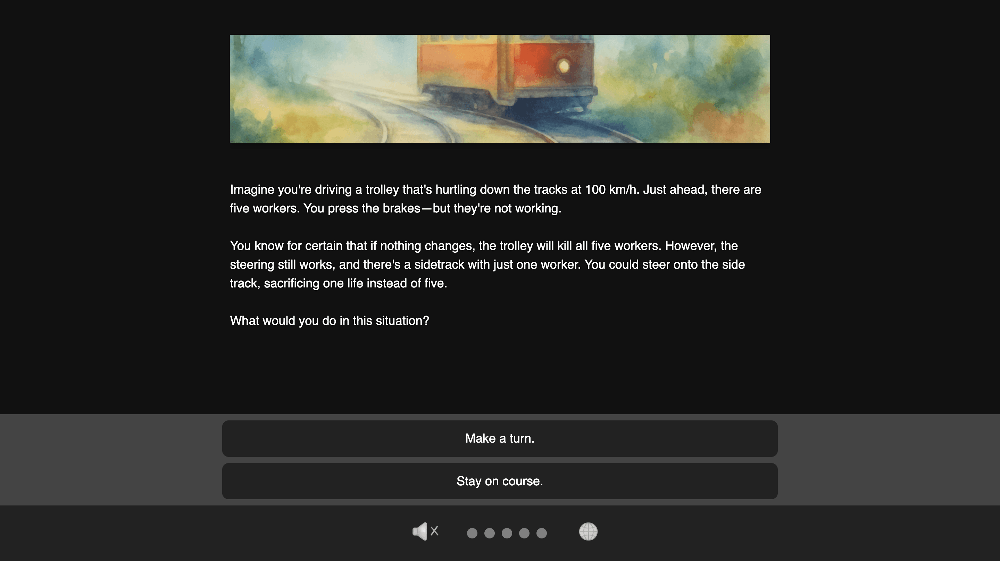
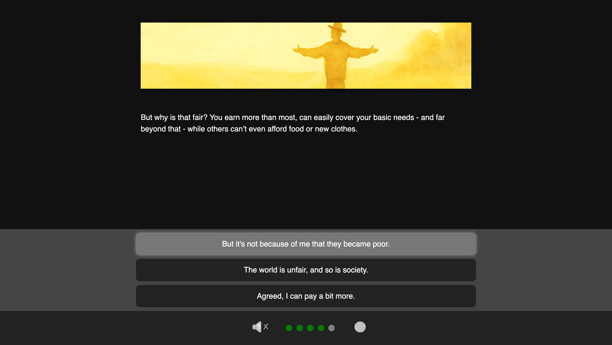
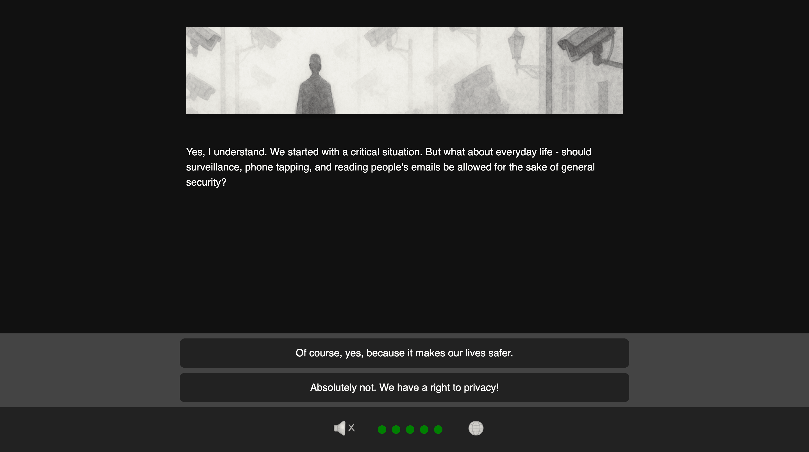
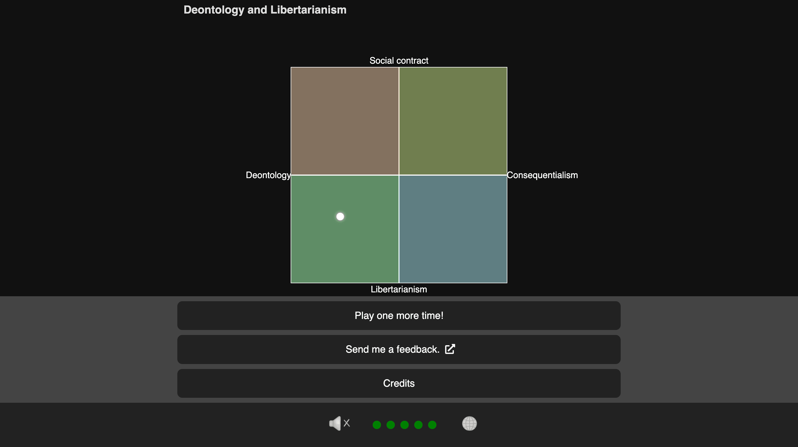
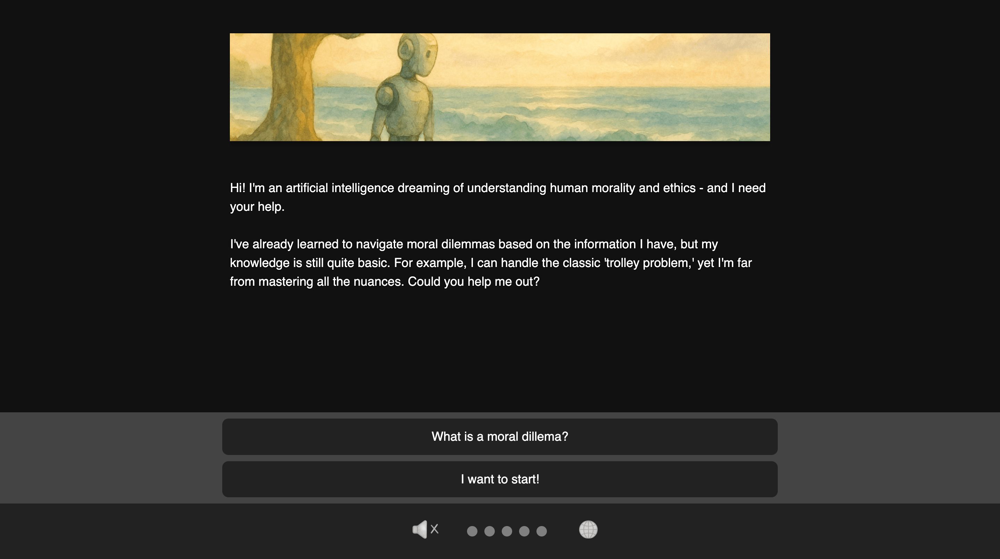
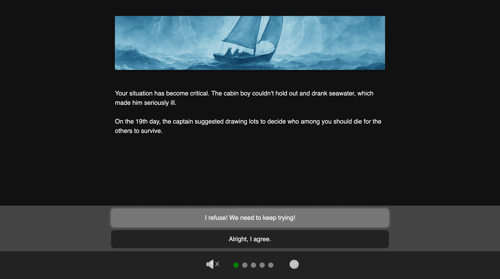
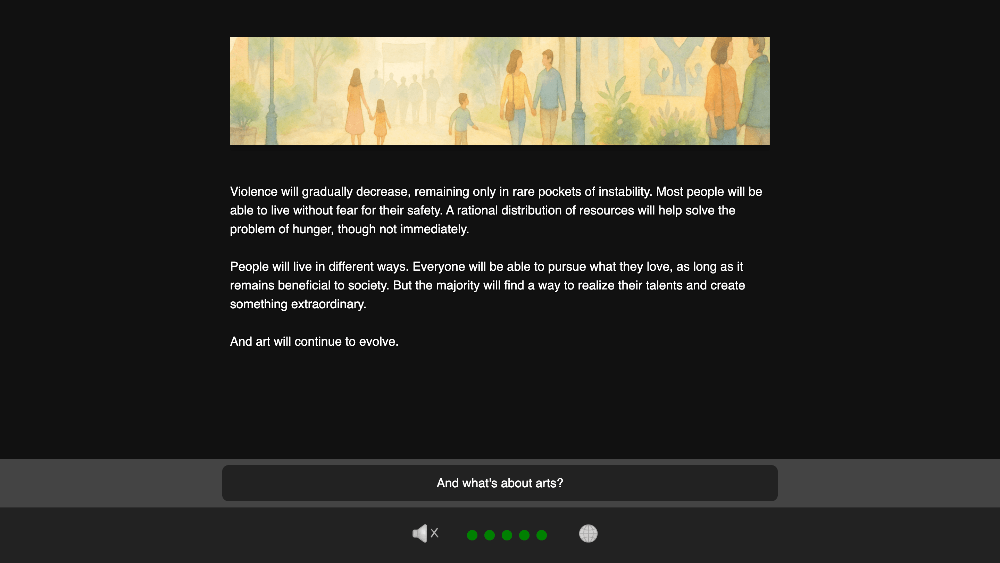

The Choice: Moral Dilemma Game (beta)
A case study about turning moral philosophy into a small interactive experience built around choices, tension, and reflection.
Open / Play
Goal
The goal of this project was to gamify ideas from the Harvard course Justice.
I wanted to explore whether ideas about justice could be learned through interaction instead of lecture format.
At first I thought about making a game based on the whole course. What came out in the end was closer to a teaser — a smaller interactive experience inspired by the course, with some additional moral dilemmas that were not directly discussed there.
Main contradictions
I decided to focus on two fundamental tensions:
- Utilitarianism vs Deontology
- Freedom vs Security
Prototypes
I built three prototypes before finding the approach that worked best:
- Version 1. A lecture-like format with the main ideas explained in portions.
- Version 2. A simple list of dilemmas where the player just had to make decisions.
- Version 3. A middle ground — the player makes choices and those choices influence the final result.
The third version felt right because it connected reflection with consequences.

Main design idea
One of my main goals was to show that no approach to justice is the single correct one.
That is why the game often pushes back against your choices and offers another point of view. It took time to write all of these responses, but this became one of the parts I like most in the final result.

Core mechanic
The mechanic is intentionally very simple.
The player makes choices. Almost every choice adds some value to one or several hidden variables. These variables represent different ethical directions.

At the end of the game, the player sees a result showing which ethical approach is closest to them based on their answers.

What matters to me is that the ending depends on the player’s decisions. That connection helps reinforce the idea that our choices matter and that they have consequences.
Story
To make the experience more interesting and to give the player more agency, I built a story where the player teaches an AI about human ethics.

This works well because the AI can ask “stupid” questions. It plays a role similar to Dr. Watson — helping reveal the player’s thinking through questions we rarely ask ourselves in everyday life.
Visual style
I chose watercolor-style illustrations to create a feeling of blurred edges.
Moral dilemmas do not have one clear correct answer — they only have different ways of responding. The watercolor look helps communicate that feeling quickly on a visual level.
Music
I tested more than twenty tracks while looking for the right tone.
At first I thought the music should support a serious atmosphere. In the end, I chose a slightly ironic jazz track so the game would not feel too heavy or dark.
The mood is closer to something in the spirit of Woody Allen films — a bit funny, a bit sad, and still serious underneath.
Learning is hidden
One of the things I wanted most was to keep the educational part embedded inside the experience.
The player is not simply told what theories mean. Instead, they move through dilemmas, make choices, and only then see how different ethical viewpoints interpret those decisions.

UI
Simple, but informative.
I wanted the interface to stay readable and calm, so the player’s attention would remain on the dilemma itself rather than on the interface.
Color logic
Each ethical direction has its own color. This helps the player intuitively read the system and understand that different ideas are being tracked in parallel.
Ending and replayability
One of the most important parts of the project is the ending. After I added it, replayability doubled and people started sharing the game with friends more often.
I added two things:
- The end of the story — a description of how the civilization will develop based on the player’s choices.
- The player’s moral compass — a result showing which ethical theories are closest to them.

Both of these helped make the connection between choices and outcome much stronger.
Tools
- Decision tree / story engine: Twine
- Images: ChatGPT
- Music: BrevAI
Try it
Play it once quickly. Then replay and intentionally choose differently — the contrast makes the underlying ethical tensions much easier to notice.